Register Summary
Register Definitions
MAC Info (MPIPE_GBE_MAC_INFO: 0x0000)
Describes connection of this MAC to mPIPE.
| Bits | Name | Type | Reset | Description
| 31:24 | DEVICE_REV | RO | 0 | Device revision ID. | 17 | ENA | RO | 0 | MAC has been enabled by mPIPE's MAC_ENABLE register | 16 | AVAIL | RO | 0 | MAC is available and may be enabled. This register will be clear if the system configuration does not allow this port to be used (for example if this port's IO PADs are in use by another MAC). The MPIPE_MAC_ENABLE.AVAIL field indicates any MACs that are not enabled for the device. Both this AVAIL and MPIPE_MAC_ENABLE.AVAIL must be asserted for the MAC to be used. | 12:8 | CHANNEL | RO | HW | mPIPE channel number associated with this MAC | 3:0 | MAC_TYPE | RO | 1 | Indicates the type of MAC (SGMII or RGMII) |
|
|---|
MAC Interface Control (MPIPE_GBE_MAC_INTFC_CTL: 0x0008)
Provides control over MAC interface functionality.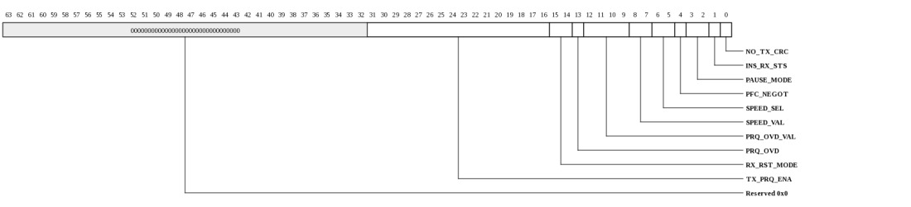
| Bits | Name | Type | Reset | Description
| 31:16 | TX_PRQ_ENA | RW | ffffh | Indicates which priority queues will be monitored for dispatching 802.3 pause frames when PAUSE_MODE is AUTO. When PAUSE_MODE is AUTO_PFC, this determines which queues will be monitored for dispatching PFC frames and sets the priority_enable_vector in the PFC frames. In AUTO_PFC mode, the upper 8 bits are not used. | 15:14 | RX_RST_MODE | RW | 0 | Controls assertion of RX domain reset. |
13 | PRQ_OVD | RW | 0 | When set, the PRQ_OVD_VAL will be used as the priority queue for all incoming packets. When clear, the priority queue will be extracted from the incoming packet's VLAN.PRIORITY field. | 12:9 | PRQ_OVD_VAL | RW | 0 | When PRQ_OVD is set, the PRQ_OVD_VAL will be used as the priority queue for all incoming packets. When clear, the priority queue will be extracted from the incoming packet's VLAN.PRIORITY field. | 8:7 | SPEED_VAL | RW | 0 | Interface speed to use when SPEED_SEL = 2. |
6:5 | SPEED_SEL | RW | 1 | Source for speed-control MUX select. |
4 | PFC_NEGOT | RO | 0 | Indicates that PFC has been negotiated (PFC pause frame was received). | 3:2 | PAUSE_MODE | RW | 0 | Mode for sending pause frames based on iPkt buffer fullness. |
1 | INS_RX_STS | RW | 0 | Append 8-byte status word to Rx (ingress) packet data. Unused bits in MSBs are zeroed. The packet will be padded out to the next 4-byte boundary before the 8-byte stauts is applied. The 45-bit field that arrives at the end of the packet data is defined below: | status[13:0] = frame_length status[14] = bad_frame status[15] = vlan_tagged status[19:16] = tci[3:0] status[20] = prty_tagged status[21] = broadcast_frame status[22] = mult_hash_match status[23] = uni_hash_match status[24] = ext_match1 status[25] = ext_match2 status[26] = ext_match3 status[27] = ext_match4 status[28] = add_match1 status[29] = add_match2 status[30] = add_match3 status[31] = add_match4 status[32] = type_match1 status[33] = type_match2 status[34] = type_match3 status[35] = type_match4 status[36] = checksumi_ok status[37] = checksumt_ok status[38] = checksumu_ok status[39] = snap_frame status[40] = length_error status[41] = crc_error status[42] = too_short status[43] = too_long status[44] = code_error 0 | NO_TX_CRC | RW | 0 | When 1, no CRC will be appended to the packet by the MAC. | |
|---|
MAC Interface Transmit Control (MPIPE_GBE_MAC_INTFC_TX_CTL: 0x0010)
Provides control over MAC interface's transmit functionality.
| Bits | Name | Type | Reset | Description
| 31:16 | TX_PFC_PAUSE_VAL | RW | 0 | Indicates which queues should be paused when TX_PAUSE_OVD is set. | 8 | TX_PAUSE_OVD | RW | 0 | When 1, PFC egress queues will be paused based on TX_PFC_PAUSE_VAL. When 0, queues will be paused based on received PFC frames. TX_PAUSE_OVD is used to emulate the reception of PFC pause reception in software. | 7 | TX_DROP | RW | 0 | When 1, all TX packets will be dropped. This bit is for diagnostics use only and is not used for normal operation. Packets targeting a link that is in the down state are typically dropped using the NETWORK_CONFIGURATION.UNI_DIR bit rather than the TX_DROP bit. | 6:0 | TX_PAUSE_HYST | RW | 1 | Time to wait between sending pause/unpause frames specified in increments of 512 bit times. | |
|---|
MAC Interface FIFO Control (MPIPE_GBE_MAC_INTFC_FIFO_CTL: 0x0018)
Provides control over MAC interface's FIFOs for diagnostics.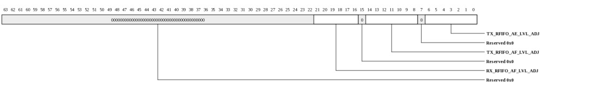
| Bits | Name | Type | Reset | Description
| 21:16 | RX_RFIFO_AF_LVL_ADJ | RW | 0 | Controls full threshold for RX FIFO. This register field is for diagnostics only. Changing this value from the default can cause packet corruption. | 14:8 | TX_RFIFO_AF_LVL_ADJ | RW | 0 | Controls full threshold for TX FIFO. This register field is for diagnostics only. Changing this value from the default can cause packet corruption. This register must be written twice (or another MAC register accessed) for the value to take effect. | 6:0 | TX_RFIFO_AE_LVL_ADJ | RW | 0 | Controls empty threshold for TX FIFO. This register field is for diagnostics only. Changing this value from the default can cause packet corruption. | |
|---|
Network Control (MPIPE_GBE_NETWORK_CONTROL: 0x8000)
Network Control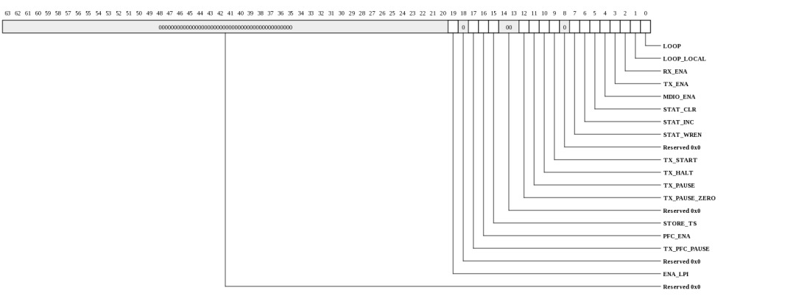
| Bits | Name | Type | Reset | Description
| 19 | ENA_LPI | WO | 0 | Enable LPI transmission - when set, LPI (low power idle) is immediately transmitted on txd and tx_er. | 17 | TX_PFC_PAUSE | WO | 0 | Transmit PFC Priority Based Pause Frame. Takes the values stored in the Transmit PFC Pause Register | 16 | PFC_ENA | RW | 0 | Enable PFC Priority Based Pause Reception capabilities. Setting this bit will allow PFC priority based pause frames to be received. | 15 | STORE_TS | RW | 0 | Store receive time stamp to memory. Setting this bit to one will cause the CRC of every received frame to be replaced with the value of the nanoseconds field of the 1588 timer that was captured as the receive frame passed the message time stamp point. Set to zero for normal operation. | 12 | TX_PAUSE_ZERO | WO | 0 | Transmit zero quantum pause frame -writing one to this bit causes a pause frame with zero quantum to be transmitted. | 11 | TX_PAUSE | WO | 0 | Transmit pause frame -writing one to this bit causes a pause frame to be transmitted. | 10 | TX_HALT | WO | 0 | Transmit halt -writing one to this bit halts transmission as | soon as any ongoing frame transmission ends. 9 | TX_START | WO | 0 | Start transmission -writing one to this bit starts transmission. | 7 | STAT_WREN | RW | 0 | Write enable for statistics registers -setting this bit to one means the statistics registers can be written for functional test purposes. | 6 | STAT_INC | WO | 0 | Incremental statistics registers -this bit is write only. Writing a one increments all the statistics registers by one for test purposes. | 5 | STAT_CLR | WO | 0 | Clear statistics registers -this bit is write only. Writing a one clears the statistics registers. | 4 | MDIO_ENA | RW | 0 | Management port enable -set to one to enable the management port. When zero forces mdio to high impedance state and mdc low. | 3 | TX_ENA | RW | 0 | Transmit enable -when set, it enables the MAC transmitter to send data. When reset transmission will stop immediately, the transmit pipeline and control registers | will be cleared and the transmit queue pointer register will reset to point to the start of the transmit descriptor list. 2 | RX_ENA | RW | 0 | Receive enable -when set, it enables the MAC to receive data. When reset frame reception will stop immediately | and the receive pipeline will be cleared. The receive queue pointer register is unaffected. 1 | LOOP_LOCAL | RW | 0 | Loop back local -asserts the loopback_local signal to the system clock generator. Also connects txd to | rxd, tx_en to rx_dv and forces full duplex mode. Bit 11 of the network configuration register must be set low to disable TBI mode when in internal loopback. rx_clk and tx_clk may malfunction as the MAC is switched into and out of internal loop back. It is important that receive and transmit circuits have already been disabled when making the switch into and out of internal loop back. 0 | LOOP | RW | 0 | Loop back - controls the loopback output pin. | |
|---|
Network Configuration (MPIPE_GBE_NETWORK_CONFIGURATION: 0x8008)
Network Configuration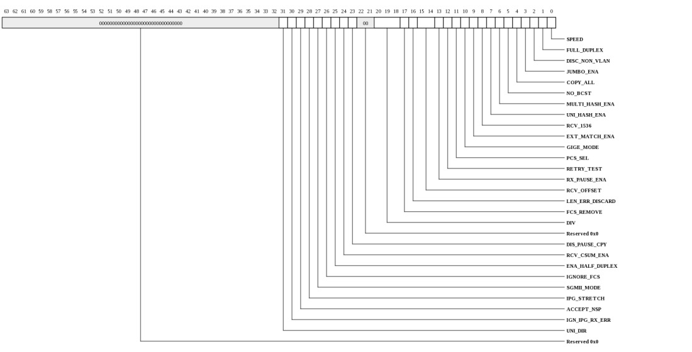
| Bits | Name | Type | Reset | Description
| 31 | UNI_DIR | RW | 0 | Uni-direction-enable. When low the PCS will transmit idle symbols if the link goes down. When high the PCS can transmit frame data when the link is down. | 30 | IGN_IPG_RX_ERR | RW | 0 | Ignore IPG rx_er. When set rx_er has no effect on the MAC's operation when rx_dv is low. This is not typically used. | 29 | ACCEPT_NSP | RW | 0 | Receive bad preamble. When set frames with non-standard preamble are not rejected. | 28 | IPG_STRETCH | RW | 0 | IPG stretch enable -when set the transmit IPG can be increased above 96 bit times depending on the previous | frame length using the IPG stretch register. 27 | SGMII_MODE | RW | 0 | SGMII mode enable. Changes behavior of the auto-negotiation advertisement and link partner ability registers to meet the requirements of SGMII and reduces the duration of the link timer from 10 ms to 1.6 ms. | 26 | IGNORE_FCS | RW | 0 | Ignore RX FCS -when set frames with FCS/CRC errors will not be rejected. FCS error statistics will still be collected for frames with bad FCS and FCS status will be | recorded in frames DMA descriptor. For normal operation this bit must be set to zero. 25 | ENA_HALF_DUPLEX | RW | 0 | Enable frames to be received in half-duplex mode while transmitting.. | 24 | RCV_CSUM_ENA | RW | 0 | Receive checksum offload enable -when set, the receive checksum engine is enabled. Frames with bad IP, TCP or | UDP checksums are discarded. 23 | DIS_PAUSE_CPY | RW | 0 | Disable copy of pause frames -set to one to prevent valid pause frames being copied to memory. When set, pause frames are not copied to memory regardless of the state of the copy all frames bit; whether a hash match is found or whether a type ID match is identified. If a destination address match is found the pause frame will be copied to memory. Note that valid pause frames received will still increment pause statistics and pause the transmission of frames as required. | 20:18 | DIV | RW | 2 | MDC clock division -set according to pclk speed. These three bits determine the number pclk (125 MHz) will be divided by to | generate MDC. For conformance with the 802.3 specification, MDC must not exceed 2.5 MHz (MDC is only active during MDIO read and write operations). 000: divide by 8, 001: divide by 16, 010: divide by 32, 011: divide by 48, 100: divide by 64, 101: divide by 96, 110: divide by 128, 111: divide by 224 17 | FCS_REMOVE | RW | 0 | FCS remove -setting this bit will cause received frames to be written to memory without their frame check sequence | (last 4 bytes). The frame length indicated will be reduced by four bytes in this mode. 16 | LEN_ERR_DISCARD | RW | 0 | Length field error frame discard -setting this bit causes frames with a measured length shorter than the extracted | length field (as indicated by bytes 13 and 14 in a non- VLAN tagged frame) to be discarded. This only applies to frames with a length field less than 0x0600. 15:14 | RCV_OFFSET | RW | 0 | Receive buffer offset -indicates the number of bytes by which the received data is offset from the start of the | receive buffer. 13 | RX_PAUSE_ENA | RW | 0 | Pause enable -when set, transmission will pause if a non zero pause quantum frame is received. | 12 | RETRY_TEST | RW | 0 | Retry test -must be set to zero for normal operation. If set to one the backoff between collisions will always been | one slot time. Setting this bit to one helps test the too many retries condition. Also used in the pause frame tests to reduce the pause counters decrement time from 512 bit times, to every rx_clk cycle. 11 | PCS_SEL | RW | 0 | PCS select - must be zero | 10 | GIGE_MODE | RW | 0 | Gigabit mode enable -setting this bit configures the MAC for 1000 Mbps operation. | 9 | EXT_MATCH_ENA | RW | 0 | External address match enable -when set the external address match interface can be used to copy frames to | memory. 8 | RCV_1536 | RW | 0 | Receive 1536 byte frames -setting this bit means the MAC will accept frames up to 1536 bytes in length. Normally the MAC would reject any frame above 1518 bytes. | 7 | UNI_HASH_ENA | RW | 0 | Unicast hash enable -when set, unicast frames will be accepted when the 6 bit hash function of the destination | address points to a bit that is set in the hash register. 6 | MULTI_HASH_ENA | RW | 0 | Multicast hash enable -when set, multicast frames will be accepted when the 6 bit hash function of the destination | address points to a bit that is set in the hash register. 5 | NO_BCST | RW | 0 | No broadcast -when set to logic one, frames addressed to the broadcast address of all ones will not be accepted. | 4 | COPY_ALL | RW | 0 | Copy all frames. When set to logic one, all valid frames will be accepted. | 3 | JUMBO_ENA | RW | 0 | Jumbo frames. Set to one to enable jumbo frames up to 10240 bytes to be accepted. The | default length is 10,240 bytes. 2 | DISC_NON_VLAN | RW | 0 | Discard non-VLAN frames -when set only VLAN tagged frames will be passed to the address matching logic. | 1 | FULL_DUPLEX | RW | 0 | Full duplex. If set to logic one, the transmit block ignores the state of collision and carrier sense and allows receive | while transmitting. 0 | SPEED | RW | 0 | Speed. Set to logic one to indicate 100 Mbps operation, logic zero for 10 Mbps. | |
|---|
Network Status (MPIPE_GBE_NETWORK_STATUS: 0x8010)
Network Status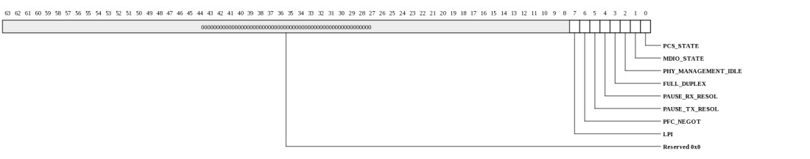
| Bits | Name | Type | Reset | Description
| 7 | LPI | RO | 0 | Set when low power idle has been detected on receive. | 6 | PFC_NEGOT | RO | 0 | Set when PFC priority based pause has been negotiated. | 5 | PAUSE_TX_RESOL | RO | 0 | PCS auto-negotiation pause transmit resolution. | 4 | PAUSE_RX_RESOL | RO | 0 | PCS auto-negotiation pause receive resolution. | 3 | FULL_DUPLEX | RO | 0 | PCS auto-negotiation duplex resolution. Set to one if the resolution function determines that both devices are capable of full duplex operation. If zero half-duplex operation is | possible as long as bit 0 (PCS link state) is also one. 2 | PHY_MANAGEMENT_IDLE | RO | 0 | The PHY management logic is idle (that is has completed). | 1 | MDIO_STATE | RO | 0 | Returns status of the mdio_in pin. - | 0 | PCS_STATE | RO | 0 | Returns status of PCS link state. If auto-negotiation is disabled this returns the synchronization status. If auto-negotiation is enabled it is set in the LINK_OK state as long as a compatible duplex mode is resolved, it is always set in the | LINK_OK state in SGMII mode. |
|---|
Transmit Status (MPIPE_GBE_TRANSMIT_STATUS: 0x8028)
Transmit Status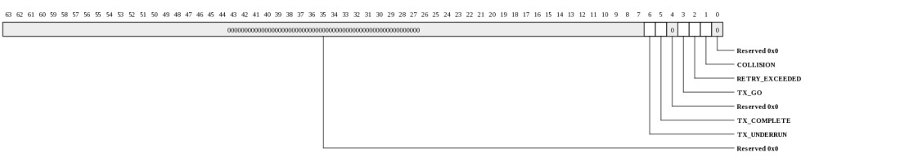
| Bits | Name | Type | Reset | Description
| 6 | TX_UNDERRUN | RW | 0 | Transmit under run -this bit is set if the transmitter was forced to terminate a frame that it had already began | transmitting due to further data being unavailable. This bit is set if a transmitter status write back has not completed when another status write back is attempted. When using the DMA interface configured for internal FIFO mode, this bit is also set when the transmit DMA has written the SOP data into the FIFO and either the AHB bus was not granted in time for further data, or because an AHB not OK response was returned, or because a used bit was read. When using the DMA interface configured for packet buffer mode, this bit will never be set. When using the external FIFO interface, this bit is also set when the tx_r_underflow input is asserted during a frame transfer. Cleared by writing a 1. 5 | TX_COMPLETE | RW | 0 | Transmit complete -set when a frame has been transmitted. Cleared by writing a one to this bit. | 3 | TX_GO | RO | 0 | Transmit go -if high transmit is active. This bit represents bit 3 of the | network control register. 2 | RETRY_EXCEEDED | RW | 0 | Retry limit exceeded -cleared by writing a one to this bit. 0 | 1 | COLLISION | RW | 0 | Collision occurred -set by the assertion of collision. Cleared by writing a one to this bit. | |
|---|
Receive Status (MPIPE_GBE_RECEIVE_STATUS: 0x8040)
Receive Status| Bits | Name | Type | Reset | Description
| 1 | FRAME_RX | RW | 0 | Frame received -one or more frames have been received and placed in memory. Cleared by writing a one to this bit. | |
|---|
Interrupt Status (MPIPE_GBE_INTERRUPT_STATUS: 0x8048)
Interrupt Status Register. Each bit is write-1-to-clear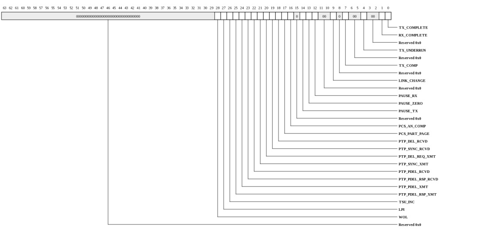
| Bits | Name | Type | Reset | Description
| 28 | WOL | W1TC | 0 | Indicates a WOL event has been received. | 27 | LPI | W1TC | 0 | Receive LPI indication status bit change. | 26 | TSU_INC | W1TC | 0 | TSU seconds register increment indicates the register has incremented. Clears when written with a 1. | 25 | PTP_PDEL_RSP_XMT | W1TC | 0 | PTP pdelay_resp frame transmitted indicates a PTP pdelay_resp frame has been transmitted. Clears when written with a 1. | 24 | PTP_PDEL_XMT | W1TC | 0 | PTP pdelay_req frame transmitted indicates a PTP pdelay_req frame has been transmitted. Clears when written with a 1. | 23 | PTP_PDEL_RSP_RCVD | W1TC | 0 | PTP pdelay_resp frame received indicates a PTP pdelay_resp frame has been received. Clears when written with a 1. | 22 | PTP_PDEL_RCVD | W1TC | 0 | PTP pdelay_req frame received indicates a PTP pdelay_req frame has been received. Clears when written with a 1. | 21 | PTP_SYNC_XMT | W1TC | 0 | PTP sync frame transmitted indicates a PTP sync frame has been transmitted. Clears when written with a 1. | 20 | PTP_DEL_REQ_XMT | W1TC | 0 | PTP delay_req frame transmitted indicates a PTP delay_req frame has been transmitted. Clears when written with a 1. | 19 | PTP_SYNC_RCVD | W1TC | 0 | PTP sync frame received indicates a PTP sync frame has been received. Clears when written with a 1. | 18 | PTP_DEL_RCVD | W1TC | 0 | PTP delay_req frame received indicates a PTP delay_req frame has been received. Clears when written with a 1. | 17 | PCS_PART_PAGE | W1TC | 0 | PCS link partner page received - set when a new base page or next page is received from the link partner. The first time this interrupt is received, it will indicate base page received and subsequent reads will indicate next pages. The next page and base page registers should only be read when this interrupt is signaled. For next pages, the link partner next page register should be read first to avoid the register being over written if the link partner base page register is read first. This interrupt also indicates when the host should write a new next page into the base page register. If further next page exchange is not required, this register should be written with a null message page. Clears when written with a 1. | 16 | PCS_AN_COMP | W1TC | 0 | PCS auto-negotiation complete - set once the internal PCS layer has completed auto-negotiation. Clears when written with a 1. | 14 | PAUSE_TX | W1TC | 0 | Pause frame transmitted -indicates a pause frame has been successfully transmitted after being initiated from | the network control register or from the tx_pause control pin. Clears when written with a 1. 13 | PAUSE_ZERO | W1TC | 0 | Pause time zero -set when either the pause time register at address 0x38 decrements to zero, or when a valid | pause frame is received with a zero pause quantum field. Clears when written with a 1. 12 | PAUSE_RX | RO | 0 | Pause frame with non-zero pause quantum received indicates a valid pause has been received that has a nonzero pause quantum field. Clears when written with a 1. | 9 | LINK_CHANGE | W1TC | 0 | Link change -set when the state of the link detected by the internal PCS changes state. Clears when written with a 1. | 7 | TX_COMP | W1TC | 0 | Transmit complete -set when a frame has been transmitted. Clears when written with a 1. | 4 | TX_UNDERRUN | RO | 0 | Transmit under run -this interrupt is set if the transmitter was forced to terminate a frame that it has already began | transmitting due to further data being unavailable. If an under run occurs, the transmitter will force bad crc and tx_er high. This interrupt is set if a transmitter status write back has not completed when another status write back is attempted. Clears when written with a 1. 1 | RX_COMPLETE | W1TC | 0 | Receive complete -a frame has been stored in memory. Clears when written with a 1. | 0 | TX_COMPLETE | RO | 0 | frame sent -the PHY maintenance register has completed its operation. Clears when written with a 1. | |
|---|
Interrupt Enable (MPIPE_GBE_INTERRUPT_ENABLE: 0x8050)
Interrupt Enable| Bits | Name | Type | Reset | Description
| 28:0 | INT_ENA | WO | 0 | Enable the associated interrupt | |
|---|
Interrupt Disable (MPIPE_GBE_INTERRUPT_DISABLE: 0x8058)
Interrupt Disable| Bits | Name | Type | Reset | Description
| 28:0 | INT_DIS | WO | 0 | Disable the associated interrupt | |
|---|
Interrupt Mask (MPIPE_GBE_INTERRUPT_MASK: 0x8060)
Interrupt Mask| Bits | Name | Type | Reset | Description
| 28:0 | INT_MASK | RW | 1fffffffh | A read of this register returns the value of the associated interrupt mask. 0: Interrupt is enabled 1: Interrupt is | disabled A write to this register directly affects the state of the corresponding bit in the interrupt status register, causing an interrupt to be generated if a 1 is written. |
|---|
PHY Maintenance (MPIPE_GBE_PHY_MAINTENANCE: 0x8068)
PHY Maintenance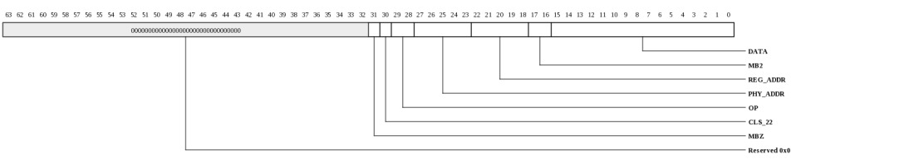
| Bits | Name | Type | Reset | Description
| 31 | MBZ | RW | 0 | Must be written with 0. | 30 | CLS_22 | RW | 0 | Must be written to 1 for Clause 22 operation. | 29:28 | OP | RW | 0 | Operation. 10 is read. 01 is write. | 27:23 | PHY_ADDR | RW | 0 | PHY address. | 22:18 | REG_ADDR | RW | 0 | Register address -specifies the register in the PHY to access. | 17:16 | MB2 | RW | 0 | Must be written to 10(b) | 15:0 | DATA | RW | 0 | For a write operation this is written with the data to be written to the PHY. After a read operation this contains | the data read from the PHY. |
|---|
Received Pause Quantum (MPIPE_GBE_RECEIVED_PAUSE_QUANTUM: 0x8070)
Received Pause Quantum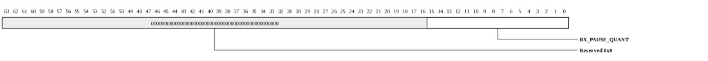
| Bits | Name | Type | Reset | Description
| 15:0 | RX_PAUSE_QUANT | RO | 0 | Received pause quantum -stores the current value of the received pause quantum register which is decremented | every 512 bit times. |
|---|
Transmit Pause Quantum (MPIPE_GBE_TRANSMIT_PAUSE_QUANTUM: 0x8078)
Transmit Pause Quantum| Bits | Name | Type | Reset | Description
| 15:0 | TX_PAUSE_QUANT | RW | ffffh | Transmit pause quantum -written with the pause quantum value for pause frame transmission. | |
|---|
Hash Register Bottom (MPIPE_GBE_HASH_BOTTOM_31_0: 0x8100)
Hash Register Bottom [31:0]| Bits | Name | Type | Reset | Description
| 31:0 | HASH_BOTTOM | RW | 0 | The first 32 bits of the hash address register. See Hash Addressing | |
|---|
Hash Register Top (MPIPE_GBE_HASH_TOP_63_32: 0x8108)
Hash Register Top [63:32]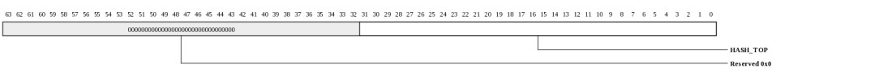
| Bits | Name | Type | Reset | Description
| 31:0 | HASH_TOP | RW | 0 | The remaining 32 bits of the hash address register. See Hash Addressing | |
|---|
Specific Address 1 Bottom (MPIPE_GBE_SPECIFIC_ADDRESS_1_BOTTOM_31_0: 0x8110)
Specific Address 1 Bottom [31:0]
| Bits | Name | Type | Reset | Description
| 31:0 | ADDR | RW | 0 | Least significant 32 bits of the destination address, that is bits 31:0. Bit zero indicates whether the address is multicast or unicast and corresponds to the least significant bit | of the first byte received. |
|---|
Specific Address 1 Top (MPIPE_GBE_SPECIFIC_ADDRESS_1_TOP_47_32: 0x8118)
Specific Address 1 Top [47:32]
| Bits | Name | Type | Reset | Description
| 15:0 | ADDR | RW | 0 | Specific address 1. The most significant bits of the destination address, that is bits 47:32. | |
|---|
Specific Address 2 Bottom (MPIPE_GBE_SPECIFIC_ADDRESS_2_BOTTOM_31_0: 0x8120)
Specific Address 2 Bottom [31:0]
| Bits | Name | Type | Reset | Description
| 31:0 | ADDR | RW | 0 | Least significant 32 bits of the destination address, that is bits 31:0. Bit zero indicates whether the address is multicast or unicast and corresponds to the least significant bit | of the first byte received. |
|---|
Specific Address 2 Top (MPIPE_GBE_SPECIFIC_ADDRESS_2_TOP_47_32: 0x8128)
Specific Address 2 Top [47:32]
| Bits | Name | Type | Reset | Description
| 15:0 | ADDR | RW | 0 | Specific address 2. The most significant bits of the destination address, that is bits 47:32. | |
|---|
Specific Address 3 Bottom (MPIPE_GBE_SPECIFIC_ADDRESS_3_BOTTOM_31_0: 0x8130)
Specific Address 3 Bottom [31:0]
| Bits | Name | Type | Reset | Description
| 31:0 | ADDR | RW | 0 | Least significant 32 bits of the destination address, that is bits 31:0. Bit zero indicates whether the address is multicast or unicast and corresponds to the least significant bit | of the first byte received. |
|---|
Specific Address 3 Top (MPIPE_GBE_SPECIFIC_ADDRESS_3_TOP_47_32: 0x8138)
Specific Address 3 Top [47:32]
| Bits | Name | Type | Reset | Description
| 15:0 | ADDR | RW | 0 | Specific address 3. The most significant bits of the destination address, that is bits 47:32. | |
|---|
Specific Address 4 Bottom (MPIPE_GBE_SPECIFIC_ADDRESS_4_BOTTOM_31_0: 0x8140)
Specific Address 4 Bottom [31:0]| Bits | Name | Type | Reset | Description
| 31:0 | ADDR | RW | 0 | Least significant 32 bits of the destination address, that is bits 31:0. Bit zero indicates whether the address is multicast or unicast and corresponds to the least significant bit | of the first byte received. |
|---|
Specific Address 4 Top (MPIPE_GBE_SPECIFIC_ADDRESS_4_TOP_47_32: 0x8148)
Specific Address 4 Top [47:32]| Bits | Name | Type | Reset | Description
| 15:0 | ADDR | RW | 0 | Specific address 4. The most significant bits of the destination address, that is bits 47:32. | |
|---|
Type ID Match 1 (MPIPE_GBE_TYPE_ID_MATCH_1: 0x8150)
Type ID Match 1
| Bits | Name | Type | Reset | Description
| 31 | TYP_ENA | RW | 0 | Enable copying of type ID match 1 matched frames. 0 | 15:0 | TYPE | RW | 0 | Type ID match 1. For use in comparisons with received frames type ID/length field. | |
|---|
Type ID Match 2 (MPIPE_GBE_TYPE_ID_MATCH_2: 0x8158)
Type ID Match 2
| Bits | Name | Type | Reset | Description
| 31 | TYP_ENA | RW | 0 | Enable copying of type ID match 2 matched frames. 0 | 15:0 | TYPE | RW | 0 | Type ID match 2. For use in comparisons with received frames type ID/length field. | |
|---|
Type ID Match 3 (MPIPE_GBE_TYPE_ID_MATCH_3: 0x8160)
Type ID Match 3| Bits | Name | Type | Reset | Description
| 31 | TYP_ENA | RW | 0 | Enable copying of type ID match 3 matched frames. 0 | 15:0 | TYPE | RW | 0 | Type ID match 3. For use in comparisons with received frames type ID/length field. | |
|---|
Type ID Match 4 (MPIPE_GBE_TYPE_ID_MATCH_4: 0x8168)
Type ID Match 4
| Bits | Name | Type | Reset | Description
| 31 | TYP_ENA | RW | 0 | Enable copying of type ID match 4 matched frames. 0 | 15:0 | TYPE | RW | 0 | Type ID match 4. For use in comparisons with received frames type ID/length field. | |
|---|
Wake on LAN (MPIPE_GBE_WAKE_ON_LAN: 0x8170)
Provides control over wake on lan event.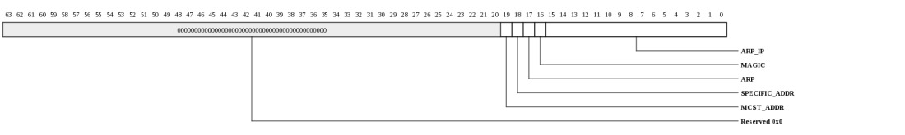
| Bits | Name | Type | Reset | Description
| 19 | MCST_ADDR | RW | 0 | Wake on LAN multicast hash event enable. When set, multicast hash events will cause the WOL event to be detected. | 18 | SPECIFIC_ADDR | RW | 0 | Specific address 1 register event enable. When set, specific address 1 events will cause WOL to be detected. | 17 | ARP | RW | 0 | Wake on LAN ARP request event enable. When set, ARP request events will cause WOL to be detected. | 16 | MAGIC | RW | 0 | Wake on LAN magic packet event enable. When set, magic packet events will cause the WOL event to be detected. | 15:0 | ARP_IP | RW | 0 | Wake on LAN ARP request UP address. Written to define the least significant 16 bits of the target IP address that is matched to generate a WOL event. A value of zero will not generate an event even if this is matched by the received frame. | |
|---|
IPG stretch (MPIPE_GBE_IPG_STRETCH: 0x8178)
IPG stretch| Bits | Name | Type | Reset | Description
| 15:0 | STRETCH | RW | 0 | Bits 7:0 are multiplied with the previously transmitted frame length (including preamble) bits 15:8 +1 divide the | frame length. If the resulting number is greater than 96 and bit 28 is set in the network configuration register then the resulting number is used for the transmit inter- packet-gap. 1 is added to bits 15:8 to prevent a divide by zero. |
|---|
Stacked VLan (MPIPE_GBE_STACKED_VLAN: 0x8180)
Stacked Vlan| Bits | Name | Type | Reset | Description
| 31 | ENABLE | RW | 0 | Enable Stacked VLAN processing mode | 15:0 | VLAN_TYPE | RW | 0 | User defined VLAN_TYPE field. When Stacked VLAN is enabled, the first VLAN tag in a received frame will only be accepted if the VLAN type field is equal to this user defined VLAN_TYPE OR equal to the standard VLAN type (0x8100). Note that the second VLAN tag of a Stacked VLAN packet will only be matched correctly if its VLAN_TYPE field equals 0x8100. | |
|---|
Transmit PFC Pause (MPIPE_GBE_TX_PFC_PAUSE: 0x8188)
Controls dispatch of PFC pause frames.| Bits | Name | Type | Reset | Description
| 15:8 | PFC_QUANTA | RW | 0 | If bit 17 of the network control register is written with a one then for each entry equal to zero in the Transmit PFC Pause Register[15:8], the PFC pause frame's pause quantum field associated with that entry will be taken from the transmit pause quantum register. For each entry equal to one in the Transmit PFC Pause Register [15:8], the pause quantum associated with that entry will be zero. | 7:0 | PFC_PEV | RW | 0 | If bit 17 of the network control register is written with a one then the priority enable vector of the PFC priority based pause frame will be set equal to the value stored in this register [7:0]. | |
|---|
Module ID (MPIPE_GBE_MODULE_ID: 0x81f8)
Module ID
| Bits | Name | Type | Reset | Description
| 31:16 | ID | RO | 2 | Module identification number, this value is fixed at 0x0002. | 15:0 | REV | RO | HW | Module revision -fixed byte value specific to the revision of the design which is incremented after each release of | the IP. |
|---|
Octets Transmitted (MPIPE_GBE_OCTETS_TX_LO: 0x8200)
Octets Transmitted [31:0]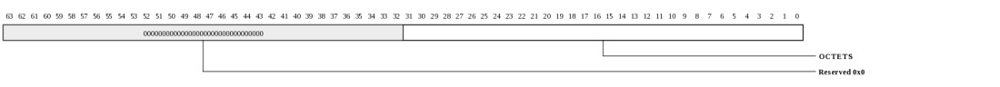
| Bits | Name | Type | Reset | Description
| 31:0 | OCTETS | RO | 0 | Transmitted octets in frame without errors [31:0]. The number of octets transmitted in valid frames of any type. | This counter is 48-bits, and is read through two registers. This count does not include octets from automatically generated pause frames. |
|---|
Octets Transmitted (MPIPE_GBE_OCTETS_TX_HI: 0x8208)
Octets Transmitted [47:32]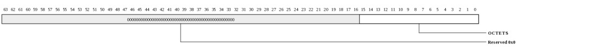
| Bits | Name | Type | Reset | Description
| 15:0 | OCTETS | RO | 0 | Transmitted octets in frame without errors [47:32]. The number of octets transmitted in valid frames of any type. | This counter is 48-bits, and is read through two registers. This count does not include octets from automatically generated pause frames. |
|---|
Frames Transmitted (MPIPE_GBE_FRAMES_TX: 0x8210)
Frames Transmitted
| Bits | Name | Type | Reset | Description
| 31:0 | FRAMES | RO | 0 | Frames transmitted without error. A 32 bit register counting the number of frames successfully transmitted, that is no under run and not too many retries. Excludes pause | frames. |
|---|
Broadcast Frames Transmitted (MPIPE_GBE_BCST_FRAMES_TX: 0x8218)
Broadcast Frames Transmitted
| Bits | Name | Type | Reset | Description
| 31:0 | FRAMES | RO | 0 | Broadcast frames transmitted without error. A 32 bit register counting the number of broadcast frames successfully transmitted without error, that is no under run and not too many retries. Excludes pause frames. | |
|---|
Multicast Frames Transmitted (MPIPE_GBE_MCST_FRAMES_TX: 0x8220)
Multicast Frames Transmitted
| Bits | Name | Type | Reset | Description
| 31:0 | FRAMES | RO | 0 | 0 Multicast frames transmitted without error. A 32 bit register counting the number of multicast frames successfully transmitted without error, that is no under run and not too many retries. Excludes pause frames. | |
|---|
Pause Frames Transmitted (MPIPE_GBE_PAUSE_FRAMES_TX: 0x8228)
Pause Frames Transmitted| Bits | Name | Type | Reset | Description
| 15:0 | FRAMES | RO | 0 | Transmitted pause frames -a 16 bit register counting the number of pause frames transmitted. Only pause frames | triggered by the register interface or through the external pause pins are counted as pause frames. Pause frames received through the external FIFO interface are counted in the frames transmitted counter. |
|---|
64 Byte Frames Transmitted (MPIPE_GBE_64_BYTE_FRAMES_TX: 0x8230)
64 Byte Frames Transmitted
| Bits | Name | Type | Reset | Description
| 31:0 | FRAMES | RO | 0 | 64 byte frames transmitted without error. A 32 bit register counting the number of 64 byte frames successfully | transmitted without error, that is no under run and not too many retries. Excludes pause frames. |
|---|
65 to 127 Byte Frames Transmitted (MPIPE_GBE_65_TO_127_BYTE_FRAMES_TX: 0x8238)
65 to 127 Byte Frames Transmitted
| Bits | Name | Type | Reset | Description
| 31:0 | FRAMES | RO | 0 | 65 to127 byte frames transmitted without error. A 32 bit register counting the number of 65 to127 byte frames | successfully transmitted without error, that is no under run and not too many retries. |
|---|
128 to 255 Byte Frames Transmitted (MPIPE_GBE_128_TO_255_BYTE_FRAMES_TX: 0x8240)
128 to 255 Byte Frames Transmitted
| Bits | Name | Type | Reset | Description
| 31:0 | FRAMES | RO | 0 | 128 to 255 byte frames transmitted without error. A 32 bit register counting the number of 128 to 255 byte frames | successfully transmitted without error, that is no under run and not too many retries. |
|---|
256 to 511 Byte Frames Transmitted (MPIPE_GBE_256_TO_511_BYTE_FRAMES_TX: 0x8248)
256 to 511 Byte Frames Transmitted
| Bits | Name | Type | Reset | Description
| 31:0 | FRAMES | RW | 0 | 256 to 511 byte frames transmitted without error. A 32 bit register counting the number of 256 to 511 byte frames | successfully transmitted without error, that is no under run and not too many retries. |
|---|
512 to 1023 Byte Frames Transmitted (MPIPE_GBE_512_TO_1023_BYTE_FRAMES_TX: 0x8250)
512 to 1023 Byte Frames Transmitted
| Bits | Name | Type | Reset | Description
| 31:0 | FRAMES | RO | 0 | 512 to 1023 byte frames transmitted without error. A 32 bit register counting the number of 512 to 1023 byte | frames successfully transmitted without error, that is no under run and not too many retries. |
|---|
1024 to 1518 Byte Frames Transmitted (MPIPE_GBE_1024_TO_1518_BYTE_FRAMES_TX: 0x8258)
1024 to 1518 Byte Frames Transmitted
| Bits | Name | Type | Reset | Description
| 31:0 | FRAMES | RO | 0 | 1024 to 1518 byte frames transmitted without error. A 32 bit register counting the number of 1024 to 1518 byte | frames successfully transmitted without error, that is no under run and not too many retries. |
|---|
Greater Than 1518 Byte Frames Transmitted (MPIPE_GBE_GREATER_THAN_1518_BYTE_FRAMES_TX: 0x8260)
Greater Than 1518 Byte Frames Transmitted
| Bits | Name | Type | Reset | Description
| 31:0 | FRAMES | RO | 0 | Greater than 1518 byte frames transmitted without error. A 32 bit register counting the number of 1518 or above | byte frames successfully transmitted without error, that is no under run and not too many retries. |
|---|
Transmit Under Runs (MPIPE_GBE_TX_UNDER_RUNS: 0x8268)
Transmit Under Runs| Bits | Name | Type | Reset | Description
| 9:0 | UNDERRUNS | RO | 0 | Transmit under runs -a 10 bit register counting the number of frames not transmitted due to a transmit under run. If this register is incremented then no other statistics | register is incremented. |
|---|
Single Collision Frames (MPIPE_GBE_SINGLE_COLLISION_FRAMES: 0x8270)
Single Collision Frames
| Bits | Name | Type | Reset | Description
| 17:0 | FRAMES | RO | 0 | Single collision frames -an 18 bit register counting the number of frames experiencing a single collision before | being successfully transmitted, that is no under run. |
|---|
Multiple Collision Frames (MPIPE_GBE_MULTIPLE_COLLISION_FRAMES: 0x8278)
Multiple Collision Frames| Bits | Name | Type | Reset | Description
| 17:0 | FRAMES | RO | 0 | Multiple collision frames -an 18 bit register counting the number of frames experiencing between two and fifteen | collisions prior to being successfully transmitted, that is no under run and not too many retries. |
|---|
Excessive Collisions (MPIPE_GBE_EXCESSIVE_COLLISIONS: 0x8280)
Excessive Collisions
| Bits | Name | Type | Reset | Description
| 9:0 | FRAMES | RO | 0 | Excessive collisions -a 10 bit register counting the number of frames that failed to be transmitted because they experienced 16 collisions. | |
|---|
Late Collisions (MPIPE_GBE_LATE_COLLISIONS: 0x8288)
Late Collisions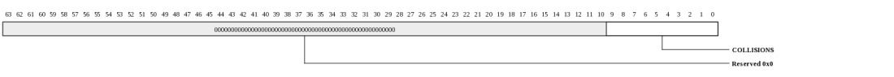
| Bits | Name | Type | Reset | Description
| 9:0 | COLLISIONS | RO | 0 | Late collisions -a 10 bit register counting the number of late collision occurring after the slot time (512 bits) has | expired. In 10/100 mode, late collisions are counted twice that is both as a collision and a late collision. In gigabit mode, a late collision causes the transmission to be aborted, thus the single and multi collision registers are not updated. |
|---|
Deferred Transmission Frames (MPIPE_GBE_DEFERRED_TRANSMISSION_FRAMES: 0x8290)
Deferred Transmission Frames| Bits | Name | Type | Reset | Description
| 17:0 | FRAMES | RO | 0 | Deferred transmission frames -an 18 bit register counting the number of frames experiencing deferral due to carrier sense being active on their first attempt at transmission. Frames involved in any collision are not | counted nor are frames that experienced a transmit under run. |
|---|
Carrier Sense Errors (MPIPE_GBE_CARRIER_SENSE_ERRORS: 0x8298)
Carrier Sense Errors| Bits | Name | Type | Reset | Description
| 9:0 | CS_ERRS | RO | 0 | Carrier sense errors -a 10 bit register counting the number of frames transmitted where carrier sense was not seen during transmission or where carrier sense was | deasserted after being asserted in a transmit frame without collision (no under run). Only incremented in half duplex mode. The only effect of a carrier sense error is to increment this register. The behavior of the other statistics registers is unaffected by the detection of a carrier sense error. |
|---|
Octets Received (MPIPE_GBE_OCTETS_RX_31_0: 0x82a0)
Octets Received [31:0]
| Bits | Name | Type | Reset | Description
| 31:0 | OCTETS | RO | 0 | Received octets in frame without errors [31:0]. The number of octets received in valid frames of any type. This counter is 48-bits and is read through two registers. This | count does not include octets from pause frames, and is only incremented if the frame is successfully filtered and copied to memory. |
|---|
Octets Received (MPIPE_GBE_OCTETS_RX_47_32: 0x82a8)
Octets Received [47:32]
| Bits | Name | Type | Reset | Description
| 15:0 | OCTETS | RO | 0 | Received octets in frame without errors [47:32]. The number of octets received in valid frames of any type. | This counter is 48-bits and is read through two registers. This count does not include octets from pause frames, and is only incremented if the frame is successfully filtered and copied to memory. |
|---|
Frames Received (MPIPE_GBE_FRAMES_RX: 0x82b0)
Frames Received
| Bits | Name | Type | Reset | Description
| 31:0 | FRAMES | RO | 0 | Frames received without error. A 32 bit register counting the number of frames successfully received. Excludes | pause frames, and is only incremented if the frame is successfully filtered and copied to memory. |
|---|
Broadcast Frames Received (MPIPE_GBE_BROADCAST_FRAMES_RX: 0x82b8)
Broadcast Frames Received
| Bits | Name | Type | Reset | Description
| 31:0 | FRAMES | RO | 0 | Broadcast frames received without error. A 32 bit register counting the number of broadcast frames successfully | received without error. Excludes pause frames, and is only incremented if the frame is successfully filtered and copied to memory. |
|---|
Multicast Frames Received (MPIPE_GBE_MULTICAST_FRAMES_RX: 0x82c0)
Multicast Frames Received
| Bits | Name | Type | Reset | Description
| 31:0 | FRAMES | RO | 0 | Multicast frames received without error. A 32 bit register counting the number of multicast frames successfully | received without error. Excludes pause frames, and is only incremented if the frame is successfully filtered and copied to memory. |
|---|
Pause Frames Received (MPIPE_GBE_PAUSE_FRAMES_RX: 0x82c8)
Pause Frames Received
| Bits | Name | Type | Reset | Description
| 15:0 | FRAMES | RO | 0 | Received pause frames -a 16 bit register counting the number of pause frames received without error. | |
|---|
64 Byte Frames Received (MPIPE_GBE_64_BYTE_FRAMES_RX: 0x82d0)
64 Byte Frames Received
| Bits | Name | Type | Reset | Description
| 31:0 | FRAMES | RO | 0 | 64 byte frames received without error. A 32 bit register counting the number of 64 byte frames successfully | received without error. Excludes pause frames, and is only incremented if the frame is successfully filtered and copied to memory. |
|---|
65 to 127 Byte Frames Received (MPIPE_GBE_65_TO_127_BYTE_FRAMES_RX: 0x82d8)
65 to 127 Byte Frames Received
| Bits | Name | Type | Reset | Description
| 31:0 | FRAMES | RO | 0 | 65 to 127 byte frames received without error. A 32 bit register counting the number of 65 to 127 byte frames | successfully received without error. Excludes pause frames, and is only incremented if the frame is successfully filtered and copied to memory. |
|---|
128 to 255 Byte Frames Received (MPIPE_GBE_128_TO_255_BYTE_FRAMES_RX: 0x82e0)
128 to 255 Byte Frames Received
| Bits | Name | Type | Reset | Description
| 31:0 | FRAMES | RO | 0 | 128 to 255 byte frames received without error. A 32 bit register counting the number of 128 to 255 byte frames | successfully received without error. Excludes pause frames, and is only incremented if the frame is successfully filtered and copied to memory. |
|---|
256 to 511 Byte Frames Received (MPIPE_GBE_256_TO_511_BYTE_FRAMES_RX: 0x82e8)
256 to 511 Byte Frames Received
| Bits | Name | Type | Reset | Description
| 31:0 | FRAMES | RO | 0 | 256 to 511 byte frames received without error. A 32 bit register counting the number of 256 to 511 byte frames | successfully transmitted without error. Excludes pause frames, and is only incremented if the frame is successfully filtered and copied to memory. |
|---|
512 to 1023 Byte Frames Received (MPIPE_GBE_512_TO_1023_BYTE_FRAMES_RX: 0x82f0)
512 to 1023 Byte Frames Received
| Bits | Name | Type | Reset | Description
| 31:0 | FRAMES | RO | 0 | 512 to 1023 byte frames received without error. A 32 bit register counting the number of 512 to 1023 byte frames | successfully received without error. Excludes pause frames, and is only incremented if the frame is successfully filtered and copied to memory. |
|---|
1024 to 1518 Byte Frames Received (MPIPE_GBE_1024_TO_1518_BYTE_FRAMES_RX: 0x82f8)
1024 to 1518 Byte Frames Received
| Bits | Name | Type | Reset | Description
| 31:0 | FRAMES | RO | 0 | 1024 to 1518 byte frames received without error. A 32 bit register counting the number of 1024 to 1518 byte frames | successfully received without error. Excludes pause frames, and is only incremented if the frame is successfully filtered and copied to memory. |
|---|
1519 to Maximum Byte Frames Received (MPIPE_GBE_1519_TO_MAXIMUM_BYTE_FRAMES_RX: 0x8300)
1519 to Maximum Byte Frames Received
| Bits | Name | Type | Reset | Description
| 31:0 | FRAMES | RO | 0 | 1519 to maximum byte frames received without error. A 32 bit register counting the number of 1519 to max byte frames | successfully received without error. Excludes pause frames, and is only incremented if the frame is successfully filtered and copied to memory. |
|---|
Undersized Frames Received (MPIPE_GBE_UNDERSIZED_FRAMES_RX: 0x8308)
Undersized Frames Received
| Bits | Name | Type | Reset | Description
| 9:0 | FRAMES | RO | 0 | Undersize frames received -a 10 bit register counting the number of frames received less than 64 bytes in length | (10/100 mode or gigabit mode, full duplex) that do not have either a CRC error or an alignment error. In gigabit mode, half duplex, this register counts either frames not conforming to the minimum slot time of 512 bytes or frames not conforming to the minimum frame size once bursting is active. |
|---|
Oversize Frames Received (MPIPE_GBE_OVERSIZE_FRAMES_RX: 0x8310)
Oversize Frames Received
| Bits | Name | Type | Reset | Description
| 9:0 | FRAMES | RO | 0 | Oversize frames received -a 10 bit register counting the number of frames received exceeding 1518 bytes (1536 | bytes if bit 8 is set in network configuration register, 10,240 bytes if bit 3 is set in the network configuration register) in length but do not have either a CRC error, an alignment error nor a receive symbol error. |
|---|
Jabbers Received (MPIPE_GBE_JABBERS_RX: 0x8318)
Jabbers Received
| Bits | Name | Type | Reset | Description
| 9:0 | FRAMES | RO | 0 | Jabbers received -a 10 bit register counting the number of frames received exceeding 1518 bytes (1536 if bit 8 | set in network configuration register, 10,240 bytes if bit 3 is set in the network configuration register) in length and have either a CRC error, an alignment error or a receive symbol error. |
|---|
Frame Check Sequence Errors (MPIPE_GBE_FRAME_CHECK_SEQUENCE_ERRORS: 0x8320)
Frame Check Sequence Errors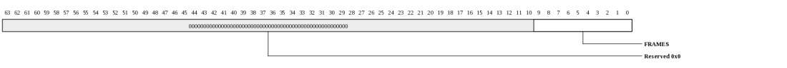
| Bits | Name | Type | Reset | Description
| 9:0 | FRAMES | RO | 0 | Frame check sequence errors -a 10 bit register counting frames that are an integral number of bytes, have bad | CRC and are between 64 and 1518 bytes in length (1536 if bit 8 set in network configuration register, 10,240 bytes if bit 3 is set in the network configuration register). This register is also incremented if a symbol error is detected and the frame is of valid length and has an integral number of bytes. This register is incremented for a frame with bad FCS, regardless of whether it is copied to memory due to ignore FCS mode being enabled in bit 26 of the network configuration register. |
|---|
Length Field Frame Errors (MPIPE_GBE_LENGTH_FIELD_FRAME_ERRORS: 0x8328)
Length Field Frame Errors
| Bits | Name | Type | Reset | Description
| 9:0 | FRAMES | RO | 0 | Length field frame errors -this 10-bit register counts the number of frames received that have a measured length | shorter than that extracted from the length field (bytes 13 and 14). This condition is only counted if the value of the length field is less than 0x0600, the frame is not of excessive length and checking is enabled through bit 16 of the network configuration register. |
|---|
Receive Symbol Errors (MPIPE_GBE_RECEIVE_SYMBOL_ERRORS: 0x8330)
Receive Symbol Errors
| Bits | Name | Type | Reset | Description
| 9:0 | FRAMES | RO | 0 | Receive symbol errors -a 10-bit register counting the number of frames that had rx_er asserted during | reception. For 10/100 mode symbol errors are counted regardless of frame length checks. For gigabit mode the frame must satisfy slot time requirements in order to count a symbol error. Additionally, in gigabit half duplex mode, carrier extension errors are also recorded. Receive symbol errors will also be counted as an FCS or alignment error if the frame is between 64 and 1518 bytes (1536 bytes if bit 8 is set in the network configuration register, 10240 bytes if bit 3 is set in the network configuration register). If the frame is larger it will be recorded as a jabber error. |
|---|
Alignment Errors (MPIPE_GBE_ALIGNMENT_ERRORS: 0x8338)
Alignment Errors
| Bits | Name | Type | Reset | Description
| 9:0 | FRAMES | RO | 0 | Alignment errors -a 10 bit register counting frames that are not an integral number of bytes long and have bad | CRC when their length is truncated to an integral number of bytes and are between 64 and 1518 bytes in length (1536 if bit 8 set in network configuration register, 10,240 bytes if bit 3 is set in the network configuration register). This register is also incremented if a symbol error is detected and the frame is of valid length and does not have an integral number of bytes. |
|---|
Receive Overruns (MPIPE_GBE_RECEIVE_OVERRUNS: 0x8348)
Receive Overruns
| Bits | Name | Type | Reset | Description
| 9:0 | FRAMES | RO | 0 | Receive overruns -a 10 bit register counting the number of frames that are address recognized but were not copied to memory due to a receive overrun. | |
|---|
IP Header Checksum Errors (MPIPE_GBE_IP_HEADER_CHECKSUM_ERRORS: 0x8350)
IP Header Checksum Errors
| Bits | Name | Type | Reset | Description
| 7:0 | FRAMES | RO | 0 | IP header checksum errors -an 8-bit register counting the number of frames discarded due to an incorrect IP | header checksum, but are between 64 and 1518 bytes (1536 bytes if bit 8 is set in the network configuration register or 10240 bytes if bit 3 is in the network configuration register) and do not have a CRC error, an alignment error, nor a symbol error. |
|---|
TCP Checksum Errors (MPIPE_GBE_TCP_CHECKSUM_ERRORS: 0x8358)
TCP Checksum Errors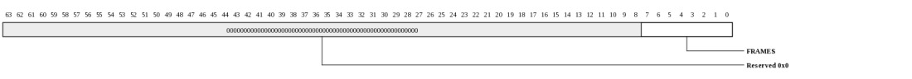
| Bits | Name | Type | Reset | Description
| 7:0 | FRAMES | RW | 0 | TCP checksum errors -an 8-bit register counting the number of frames discarded due to an incorrect TCP | checksum, but are between 64 and 1518 bytes (1536 bytes if bit 8 is set in the network configuration register or 10240 bytes if bit 3 is in the network configuration register) and do not have a CRC error, an alignment error, nor a symbol error. |
|---|
UDP Checksum Errors (MPIPE_GBE_UDP_CHECKSUM_ERRORS: 0x8360)
UDP Checksum Errors
| Bits | Name | Type | Reset | Description
| 7:0 | FRAMES | RO | 0 | UDP checksum errors -an 8-bit register counting the number of frames discarded due to an incorrect UDP | checksum, but are between 64 and 1518 bytes (1536 bytes if bit 8 is set in the network configuration register or 10240 bytes if bit 3 is in the network configuration register) and do not have a CRC error, an alignment error, nor a symbol error. |
|---|
1588 Timer Seconds (MPIPE_GBE_1588_TIMER_SECONDS: 0x83a0)
1588 Timer Seconds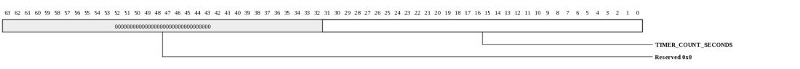
| Bits | Name | Type | Reset | Description
| 31:0 | TIMER_COUNT_SECONDS | RW | 0 | Timer count in seconds. This register is writeable. It increments by one when the 1588 nanoseconds counter counts to one second. It may also be incremented when the timer adjust register is written. | |
|---|
1588 Timer Nanoseconds (MPIPE_GBE_1588_TIMER_NANOSECONDS: 0x83a8)
1588 Timer Nanoseconds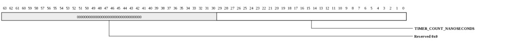
| Bits | Name | Type | Reset | Description
| 29:0 | TIMER_COUNT_NANOSECONDS | RW | 0 | Timer count in nanoseconds. This register is writeable. It can also be adjusted by writes to the 1588 timer adjust register. It increments by the value of the 1588 timer increment register each clock cycle. | |
|---|
1588 Timer Adjust (MPIPE_GBE_1588_TIMER_ADJUST: 0x83b0)
1588 Timer Adjust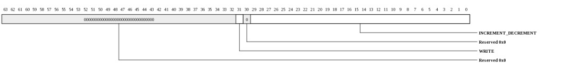
| Bits | Name | Type | Reset | Description
| 31 | WRITE | WO | 0 | Write as one to subtract from the 1588 timer. Write as zero to add to it. | 29:0 | INCREMENT_DECREMENT | WO | 0 | The number of nanoseconds to increment or decrement the 1588 timer nanoseconds register. If necessary the 1588 seconds register will be incremented or decremented | |
|---|
1588 Timer Increment (MPIPE_GBE_1588_TIMER_INCREMENT: 0x83b8)
1588 Timer Increment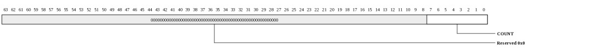
| Bits | Name | Type | Reset | Description
| 7:0 | COUNT | RW | 0 | A count of nanoseconds by which the 1588 timer nanoseconds register will be incremented each clock cycle. | |
|---|
PTP Event Frame Transmitted Seconds (MPIPE_GBE_PTP_EVENT_FRAME_TRANSMITTED_SECONDS: 0x83c0)
PTP Event Frame Transmitted Seconds| Bits | Name | Type | Reset | Description
| 31:0 | UPDATE | RO | 0 | The register is updated with the value that the 1588 timer seconds register held when the SFD of a PTP transmit primary event crosses the MII interface. The actual update occurs when the MAC recognizes the frame as a PTP sync or delay_req frame. An interrupt is issued when the register is updated. | |
|---|
PTP Event Frame Transmitted Nanoseconds (MPIPE_GBE_PTP_EVENT_FRAME_TRANSMITTED_NANOSECONDS: 0x83c8)
PTP Event Frame Transmitted Nanoseconds| Bits | Name | Type | Reset | Description
| 29:0 | UPDATE | RO | 0 | The register is updated with the value that the 1588 timer nanoseconds register held when the SFD of a PTP transmit primary event crosses the MII interface. The actual update occurs when the MAC recognizes the frame as a PTP sync or delay_req frame. An interrupt is issued when the register is updated. | |
|---|
PTP Event Frame Received Seconds (MPIPE_GBE_PTP_EVENT_FRAME_RECEIVED_SECONDS: 0x83d0)
PTP Event Frame Received Seconds
| Bits | Name | Type | Reset | Description
| 31:0 | UPDATE | RO | 0 | The register is updated with the value that the 1588 timer seconds register held when the SFD of a PTP receive primary event crosses the MII interface. The actual update occurs when the MAC recognizes the frame as a PTP sync or delay_req frame. An interrupt is issued when the register is updated. | |
|---|
PTP Event Frame Received Nanoseconds (MPIPE_GBE_PTP_EVENT_FRAME_RECEIVED_NANOSECONDS: 0x83d8)
PTP Event Frame Received Nanoseconds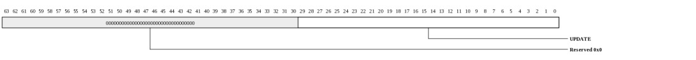
| Bits | Name | Type | Reset | Description
| 29:0 | UPDATE | RO | 0 | The register is updated with the value that the 1588 timer nanoseconds register held when the SFD of a PTP receive primary event crosses the MII interface. The actual update occurs when the MAC recognizes the frame as a PTP sync or delay_req frame. An interrupt is issued when the register is updated. | |
|---|
PTP Peer Event Frame Transmitted Seconds (MPIPE_GBE_PTP_PEER_EVENT_FRAME_TRANS_SECS: 0x83e0)
PTP Peer Event Frame Transmitted Seconds| Bits | Name | Type | Reset | Description
| 31:0 | UPDATE | RO | 0 | The register is updated with the value that the 1588 timer seconds register held when the SFD of a PTP transmit peer event crosses the MII interface. The actual update occurs when the MAC recognizes the frame as a PTP pdelay_req or pdelay_resp frame. An interrupt is issued when the register is updated. | |
|---|
PTP Peer Event Frame Transmitted Nanoseconds (MPIPE_GBE_PTP_PEER_EVENT_FRAME_TRANS_NANOSECS: 0x83e8)
PTP Peer Event Frame Transmitted Nanoseconds| Bits | Name | Type | Reset | Description
| 29:0 | UPDATE | RO | 0 | The register is updated with the value that the 1588 timer nanoseconds register held when the SFD of a PTP transmit peer event crosses the MII interface. The actual update occurs when the MAC recognizes the frame as a PTP pdelay_req or pdelay_resp frame. An interrupt is issued when the register is updated. | |
|---|
PTP Peer Event Frame Received Seconds (MPIPE_GBE_PTP_PEER_EVENT_FRAME_RECV_SECS: 0x83f0)
PTP Peer Event Frame Received Seconds| Bits | Name | Type | Reset | Description
| 31:0 | UPDATE | RO | 0 | The register is updated with the value that the 1588 timer seconds register held when the SFD of a PTP receive peer event crosses the MII interface. The actual update occurs when the MAC recognizes the frame as a PTP pdelay_req or pdelay_resp frame. An interrupt is issued when the register is updated. | |
|---|
PTP Peer Event Frame Received Nanoseconds (MPIPE_GBE_PTP_PEER_EVENT_FRAME_RECV_NANOSECS: 0x83f8)
PTP Peer Event Frame Received Nanoseconds
| Bits | Name | Type | Reset | Description
| 29:0 | UPDATE | RO | 0 | The register is updated with the value that the 1588 timer nanoseconds register held when the SFD of a PTP receive peer event crosses the MII interface. The actual update occurs when the MAC recognizes the frame as a PTP pdelay_req or pdelay_resp frame. An interrupt is issued when the register is updated. | |
|---|
PCS Control (MPIPE_GBE_PCS_CTL: 0x8400)
This register provides the main control functions with respect to the PCS.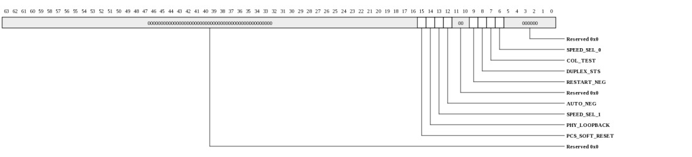
| Bits | Name | Type | Reset | Description
| 15 | PCS_SOFT_RESET | WO | 0 | PCS software reset - written by software to force the hardware logic into a reset state. This bit is self clearing. When reading this bit, logic 1 is returned until both the soft reset has completed and the PCS is enabled through the PCS select bit of the network configuration register. Writing logic 0 has no affect. | 14 | PHY_LOOPBACK | RW | 0 | Unused: PHY loopback can be initiated via the MPIPE_XAUI_SERDES_CONFIG registers. | 13 | SPEED_SEL_1 | RW | 0 | Speed select [1] - combined with speed select [0] to indicate the speed of operation of the PCS. As the MAC PCS is only intended to operate at 1000 Mbps, this bit is hardwired to logic 0. | 12 | AUTO_NEG | RW | 1 | Enable auto-negotiation - when set active high, auto-negotiation operation is enabled. | 9 | RESTART_NEG | WO | 0 | Restart auto-negotiation - when set active high, the hardware restarts auto-negotiation. This bit is self clearing, but once set shall remain in this state until auto-negotiation has restarted. Writing logic 0 has no affect. | 8 | DUPLEX_STS | RO | 0 | This returns the value of the MAC's duplex state as indicated in bit 1 of the MAC's network configuration register. | 7 | COL_TEST | RW | 0 | Collision test - when set active high, the PCS generates collisions on transmit. This bit should only be set for test purposes. | 6 | SPEED_SEL_0 | RW | 1 | Speed select [0] - combined with speed select [1] to indicate the speed of operation of the PCS. As the MAC PCS is only intended to operate at 1000 Mbps, this bit is hardwired to logic 1. | |
|---|
PCS Status (MPIPE_GBE_PCS_STS: 0x8408)
This register indicates general status information concerning the PCS.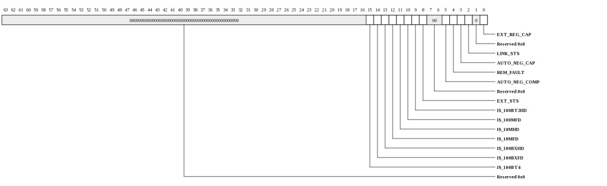
| Bits | Name | Type | Reset | Description
| 15 | IS_100BT4 | RO | 0 | 100 BASE-T4. This bit is hardwired to logic 0. | 14 | IS_100BXFD | RO | 0 | 100 BASE-X full duplex. This bit is hardwired to logic 0. | 13 | IS_100BXHD | RO | 0 | 100 BASE-X half duplex. This bit is hardwired to logic 0. | 12 | IS_10MFD | RO | 0 | 10 Mbps full duplex. This bit is hardwired to logic 0. | 11 | IS_10MHD | RO | 0 | 10 Mbps half duplex. This bit is hardwired to logic 0. | 10 | IS_100MFD | RO | 0 | 100 BASE-T2 full duplex. This bit is hardwired to logic 0. | 9 | IS_100BT2HD | RO | 0 | 100 BASE-T2 half duplex. This bit is hardwired to logic 0. | 8 | EXT_STS | RO | 1 | Extended status - when set active high, indicates extended status information is present in the PCS auto-negotiation extended status register. This bit is hardwired to logic 1. | 5 | AUTO_NEG_COMP | RO | 0 | Auto-negotiation complete - set active high by the PCS hardware to indicate auto-negotiation has completed. | 4 | REM_FAULT | RO | 0 | Remote fault - set active high if the link partner remote fault bits in the PCS auto-negotiation link partner ability register, indicates an error. Resets low when read. | 3 | AUTO_NEG_CAP | RO | 0 | Auto-negotiation ability - this bit indicates whether the PCS has auto-negotiation ability and reflects the value of the auto-negotiation enable bit in the PCS control register. | 2 | LINK_STS | RO | 0 | Link status - indicates the status of the physical connection to the link partner. When set to logic 1 the link is up, and when set to logic 0, the link is down. If auto-negotiation is disabled this returns the synchronization status. Held at logic 0 if the link goes down until this bit is read. | 0 | EXT_REG_CAP | RO | 1 | Extended register capabilities - when set active high, indicates the PCS supports extended register capabilities. This bit is hardwired to logic 1. | |
|---|
PCS PHY Upper Identifier (MPIPE_GBE_PCS_PHY_UPPER_ID: 0x8410)
The value of this register indicates the upper 16-bits of the PHY's identification code.
| Bits | Name | Type | Reset | Description
| 15:0 | VAL | RO | 0 | Upper 16-bits of the PHY identification code, corresponding to the fixed identification for the MAC. | |
|---|
PCS PHY Lower Identifier (MPIPE_GBE_PCS_PHY_LOWER_ID: 0x8418)
The value of this register indicates the lower 16-bits of the PHY's identification code.
| Bits | Name | Type | Reset | Description
| 15:0 | VAL | RO | 0 | Lower 16-bits of the PHY identification code, corresponding to the fixed identification for the MAC. | |
|---|
PCS Auto-negotiation Advertisement (MPIPE_GBE_PCS_AUTO_NEG: 0x8420)
The value of this register is used to transmit the base page of the MAC's PCS capabilities. Since the MAC is used for SGMII operation, the values are fixed.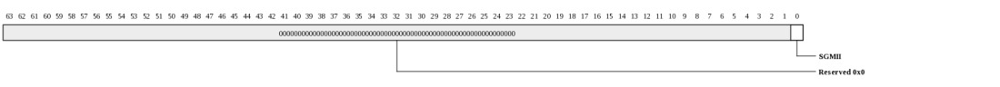
| Bits | Name | Type | Reset | Description
| 0 | SGMII | RO | 1 | 1 to indicate an SGMII port. | |
|---|
PCS Auto-negotiation Link Partner Ability (MPIPE_GBE_PCS_AUTO_NEG_PARTNER: 0x8428)
The SGMII standard specifies the format for this register. The value of this register contains the link partner's base page received information. In this case the link partner is the PHY connected by the SGMII.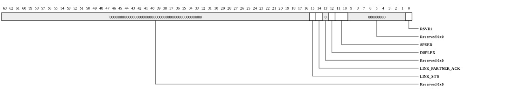
| Bits | Name | Type | Reset | Description
| 15 | LINK_STS | RO | 0 | Link status (1=UP, 0=DOWN) | 14 | LINK_PARTNER_ACK | RW | 0 | Link partner acknowledge - indicates the link partner has successfully received the transmitted base page. | 12 | DUPLEX | RW | 0 | Duplex mode (0=HALF,1=FULL) | 11:10 | SPEED | RW | 0 | Speed: | 11: Reserved 10: 1000 Mbps 01: 100 Mbps 00: 10 Mbps 0 | RSVD1 | RO | 1 | Reserved. Read as one. | |
|---|
PCS Auto-negotiation Expansion (MPIPE_GBE_PCS_AUTO_NEG_EXP: 0x8430)
This register contains auto-negotiation next page ability and page received information.| Bits | Name | Type | Reset | Description
| 2 | NEXT_PG_CAP | RO | 1 | Next page capability - hard wired to logic 1 to indicate that the MAC PCS supports next page operation | 1 | PG_RCVD | RO | 0 | Page received - this bit is set active high when a new page has been received from the link partner. It is cleared when the link partner base page register or link partner next page register has been read. | |
|---|
PCS Auto-negotiation Next Page (MPIPE_GBE_PCS_AUTO_NEG_NXT_PG: 0x8438)
The value of this register is used to transmit the next page information for the MAC PCS.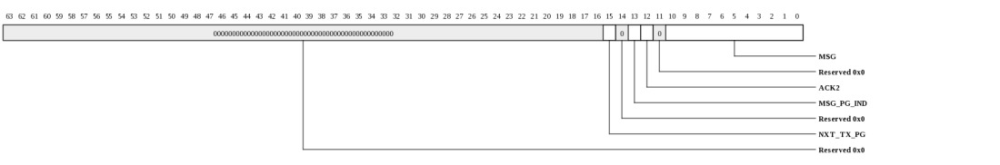
| Bits | Name | Type | Reset | Description
| 15 | NXT_TX_PG | RW | 0 | Next page to transmit - this bit indicates whether this is the last next page to be transmitted: | 0: Last page. 1: Additional page(s) to follow. 13 | MSG_PG_IND | RW | 0 | Message page indicator - this bit identifies the message. | 0: Unformatted page. 1: Message page. 12 | ACK2 | RW | 0 | Acknowledge 2 - when set active high, indicates that the MAC PCS has the ability to comply with the last received message. | 10:0 | MSG | RW | 0 | Message - contains data as defined by the message page indicator bit. | |
|---|
PCS Auto-negotiation Link Partner Next Page (MPIPE_GBE_PCS_AUTO_NEG_LP_NP: 0x8440)
The value of this register contains the next page received information from the link partner.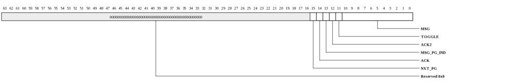
| Bits | Name | Type | Reset | Description
| 15 | NXT_PG | RW | 0 | Next page to receive - this bit indicates whether this is the last page to be received in the sequence by the MAC PCS: | 0: Last page. 1: Additional page(s) to follow. 14 | ACK | RW | 0 | Acknowledge - this bit indicates whether as part of the next page function, the link partner has successfully received the last message transmitted. | 13 | MSG_PG_IND | RW | 0 | Message page indicator - this bit identifies the message. | 0: Unformatted page. 1: Message page. 12 | ACK2 | RW | 0 | Acknowledge 2 - set active high by the link partner to indicate when it has the ability to comply with the last message received. | 11 | TOGGLE | RW | 0 | Toggle - this bit toggles with every received page. | 10:0 | MSG | RW | 0 | Message - contains data as defined by the message page indicator bit. | |
|---|
PCS Auto-negotiation Extended Status (MPIPE_GBE_PCS_AUTO_NEX_EXT_STS: 0x8478)
This register contains PCS auto-negotiation extended status information.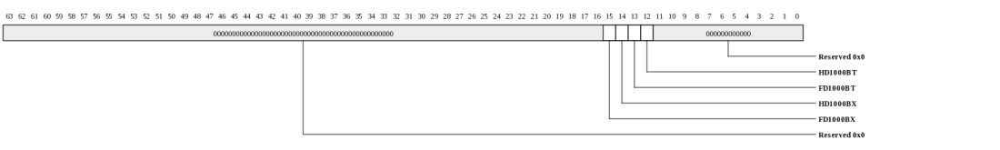
| Bits | Name | Type | Reset | Description
| 15 | FD1000BX | RO | 1 | Full duplex 1000BASE-X - hardwired to logic 1, indicates the MAC PCS can support full duplex operation of 1000BASE-X. | 14 | HD1000BX | RO | 1 | Half duplex 1000BASE-X - hardwired to logic 1, indicates the MAC PCS can support half duplex operation of 1000BASE-X. | 13 | FD1000BT | RO | 0 | Full duplex 1000BASE-T - hardwired to logic 0, indicates the MAC PCS cannot support 1000BASE-T full duplex operation. | 12 | HD1000BT | RO | 0 | Half duplex 1000BASE-T - hardwired to logic 0, indicates the MAC PCS cannot support 1000BASE-T half duplex operation. | |
|---|
Received LPI Transitions (MPIPE_GBE_RCVD_LPI_TRANS: 0x84e0)
Counts received transitions.| Bits | Name | Type | Reset | Description
| 15:0 | VAL | RO | 0 | Counts number of transitions from normal idle to low power idle. Clears on read. | |
|---|
Received LPI Time (MPIPE_GBE_RCVD_LPI_TIME: 0x84e8)
Counts time in LPI RX
| Bits | Name | Type | Reset | Description
| 23:0 | VAL | RO | 0 | This register counts once every 8 ns when the LPI indication bit is set in the NETWORK_STATUS register. Cleared on read. | |
|---|
Transmit LPI Transitions (MPIPE_GBE_XMT_LPI_TRANS: 0x84f0)
Counts TX LPI transitions| Bits | Name | Type | Reset | Description
| 15:0 | VAL | RO | 0 | Counts the number of times the enable LPI transmission bit goes from low to high in the NETWORK_CONTROL register. | |
|---|
Transmit LPI Time (MPIPE_GBE_XMT_LPI_TIME: 0x84f8)
Counts time in LPI TX
| Bits | Name | Type | Reset | Description
| 23:0 | VAL | RO | 0 | This register counts once every 8 ns when the ENA_LPI bit in the NETWORK_CONTROL register is set. Cleared on read. | |
|---|
Copyright © 2014 Tilera® Corporation. All rights reserved. Printed in the United States of America.
No part of this book may be reproduced, stored in a retrieval system, or transmitted in any form or by any means, electronic, mechanical, photocopying, recording, or otherwise, except as may be expressly permitted by the applicable copyright statutes or in writing by the Publisher.
The following are registered trademarks of Tilera Corporation: Tilera and the Tilera logo. The following are trademarks of Tilera Corporation: Embedding Multicore, The Multicore Company, Tile Processor, TILE Architecture, TILE64, TILEPro, TILEPro36, TILEPro64, TILExpress, TILExpress-64, TILExpressPro-64, TILExpress-20G, TILExpressPro-20G, TILExpressPro-22G, iMesh, TileDirect, TILEmpower, TILEmpower-Gx, TILEncore, TILEncorePro, TILEncore-Gx, TILE-Gx, TILE-Gx16, TILE-Gx36, TILE-Gx64, TILE-Gx100, TILE-Gx3000, TILE-Gx5000, TILE-Gx8000, DDC (Dynamic Distributed Cache), Multicore Development Environment, Gentle Slope Programming, iLib, TMC (Tilera Multicore Components), hardwall, Zero Overhead Linux (ZOL), MiCA (Multicore iMesh Coprocessing Accelerator), and mPIPE (multicore Programmable Intelligent Packet Engine). All other trademarks and/or registered trademarks are the property of their respective owners.
Third-party software: The Tilera IDE makes use of the BeanShell scripting library. Source code for the BeanShell library can be found at the BeanShell website (http://www.beanshell.org/developer.html).
The following is a trademark of Marvell Semiconductor, Inc.: Distributed Switching Architecture (DSA).
This document contains advance information on Tilera products that are in development, sampling or initial production phases. This information and specifications contained herein are subject to change without notice at the discretion of Tilera Corporation.
No license, express or implied by estoppels or otherwise, to any intellectual property is granted by this document. Tilera disclaims any express or implied warranty relating to the sale and/or use of Tilera products, including liability or warranties relating to fitness for a particular purpose, merchantability or infringement of any patent, copyright or other intellectual property right.
Products described in this document are NOT intended for use in medical, life support, or other hazardous uses where malfunction could result in death or bodily injury.
THE INFORMATION CONTAINED IN THIS DOCUMENT IS PROVIDED ON AN "AS IS" BASIS. Tilera assumes no liability for damages arising directly or indirectly from any use of the information contained in this document.